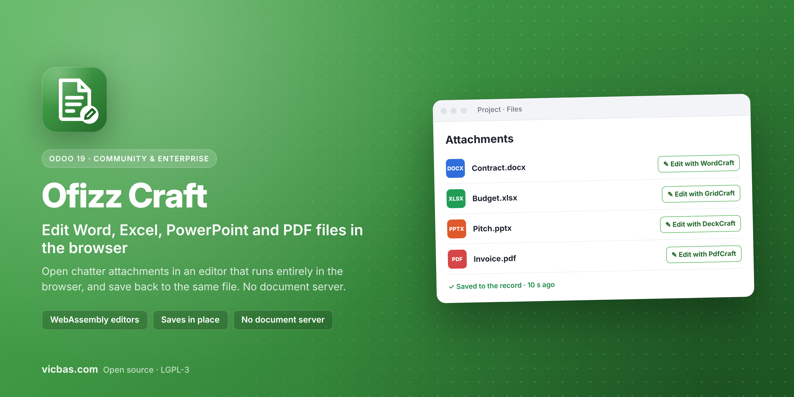

Edit Word, Excel, PowerPoint and PDF files in the browser
Ofizz Craft opens the documents attached to any record's chatter in the WordCraft, GridCraft, DeckCraft and PdfCraft web editors — Rust compiled to WebAssembly, running entirely in the browser — and saves the result back to the same attachment. Odoo serves the editors and stores the files.
Every supported attachment gets an Edit with… action that opens the editor in a new tab.
Saving overwrites the same attachment on the record, and the chatter refreshes.
Saves 10 s after a change, plus a Save button and a prompt before closing with unsaved changes.
The editors run in the browser as WebAssembly. Nothing to host besides Odoo.
Save As / Export downloads a copy (PDF, PNG, ODT…); the record keeps its original.
One save route with Odoo's usual checks: group, record write access and a 64 MiB limit.
offiz_craft/scripts/fetch_web_builds.sh once. It downloads the pinned builds (~200 MB) and verifies their SHA-256 sums.Questions, installation support and custom Odoo development.
contacto@vicbas.com vicbas.com© Victor Bastías Escobar · Licensed under LGPL-3